The fortify function converts an S3 object generated by
evalmod to a data frame for ggplot2.
# S3 method for sscurves fortify(model, raw_curves = TRUE, ...) # S3 method for mscurves fortify(model, raw_curves = TRUE, ...) # S3 method for smcurves fortify(model, raw_curves = FALSE, ...) # S3 method for mmcurves fortify(model, raw_curves = FALSE, ...) # S3 method for sspoints fortify(model, raw_curves = TRUE, ...) # S3 method for mspoints fortify(model, raw_curves = TRUE, ...) # S3 method for smpoints fortify(model, raw_curves = FALSE, ...) # S3 method for mmpoints fortify(model, raw_curves = FALSE, ...)
S3 object generated by evalmod.
The fortify function takes one of the following S3 objects.
| S3 object | # of models | # of test datasets |
| sscurves | single | single |
| mscurves | multiple | single |
| smcurves | single | multiple |
| mmcurves | multiple | multiple |
| S3 object | # of models | # of test datasets |
| sspoints | single | single |
| mspoints | multiple | single |
| smpoints | single | multiple |
| mmpoints | multiple | multiple |
evalmod for more details.raw_curves is set to TRUE
of the evalmod function.x_bins
of the evalmod function. The default values is FALSE.The fortify function returns a data frame for
ggplot2.
evalmod for generating S3 objects with
performance evaluation measures.
autoplot for plotting with ggplot2.
## Load library library(ggplot2) ################################################## ### Single model & single test dataset ### ## Load a dataset with 10 positives and 10 negatives data(P10N10) ## Generate an sscurve object that contains ROC and Precision-Recall curves sscurves <- evalmod(scores = P10N10$scores, labels = P10N10$labels) ## Let ggplot internally call fortify p_rocprc <- ggplot(sscurves, aes(x = x, y = y)) p_rocprc <- p_rocprc + geom_line() p_rocprc <- p_rocprc + facet_wrap(~curvetype) p_rocprc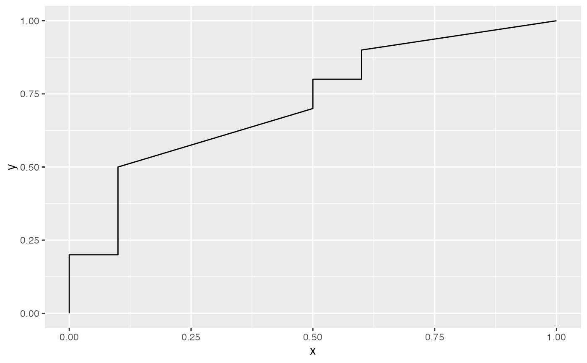## Explicitly fortify sscurves ssdf <- fortify(sscurves) ## Plot a ROC curve p_roc <- ggplot(subset(ssdf, curvetype == "ROC"), aes(x = x, y = y)) p_roc <- p_roc + geom_line() p_roc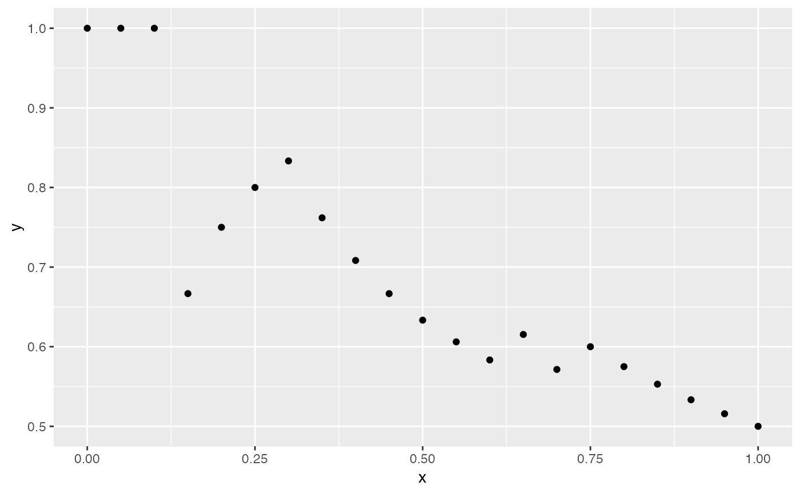## Plot a Precision-Recall curve p_prc <- ggplot(subset(ssdf, curvetype == "PRC"), aes(x = x, y = y)) p_prc <- p_prc + geom_line() p_prc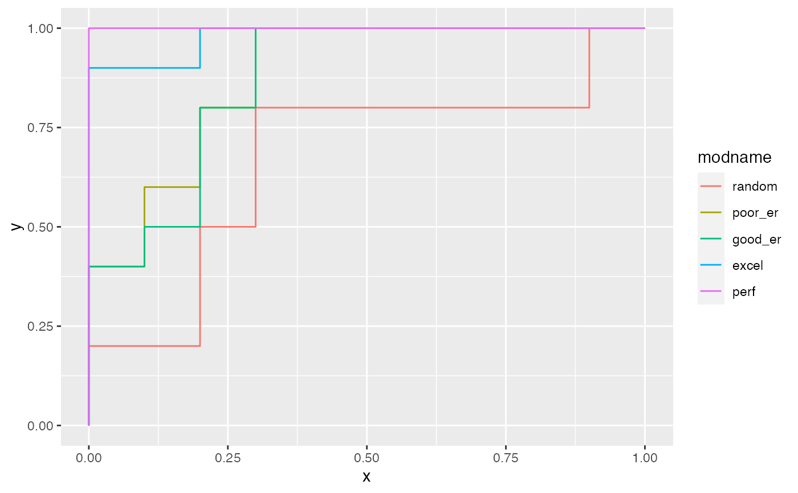## Generate an sspoints object that contains basic evaluation measures sspoints <- evalmod(mode = "basic", scores = P10N10$scores, labels = P10N10$labels) ## Fortify sspoints ssdf <- fortify(sspoints) ## Plot normalized ranks vs. precision p_prec <- ggplot(subset(ssdf, curvetype == "precision"), aes(x = x, y = y)) p_prec <- p_prec + geom_point() p_prec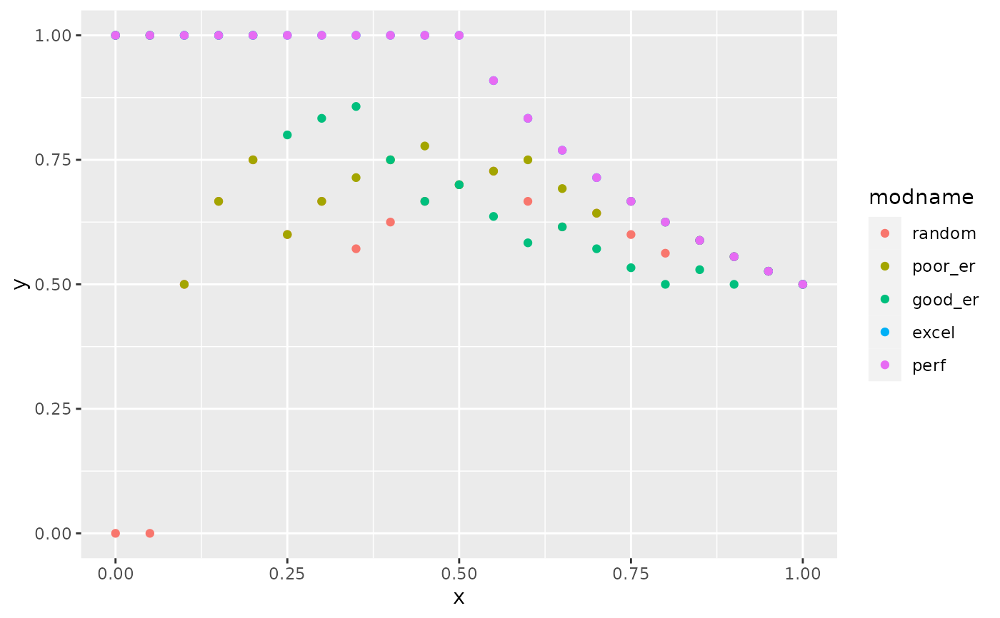################################################## ### Multiple models & single test dataset ### ## Create sample datasets with 10 positives and 10 negatives samps <- create_sim_samples(1, 10, 10, "all") mdat <- mmdata(samps[["scores"]], samps[["labels"]], modnames = samps[["modnames"]]) ## Generate an mscurve object that contains ROC and Precision-Recall curves mscurves <- evalmod(mdat) ## Let ggplot internally call fortify p_rocprc <- ggplot(mscurves, aes(x = x, y = y, color = modname)) p_rocprc <- p_rocprc + geom_line() p_rocprc <- p_rocprc + facet_wrap(~curvetype) p_rocprc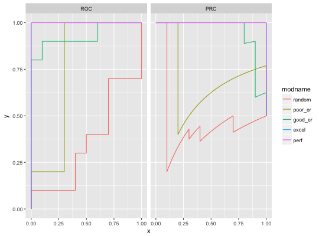## Explicitly fortify mscurves msdf <- fortify(mscurves) ## Plot ROC curve df_roc <- subset(msdf, curvetype == "ROC") p_roc <- ggplot(df_roc, aes(x = x, y = y, color = modname)) p_roc <- p_roc + geom_line() p_roc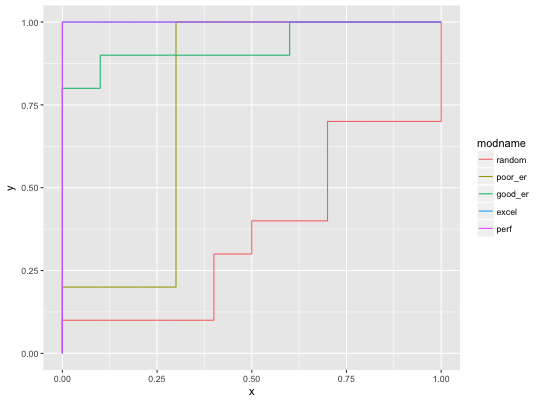## Fortified data frame can be used for plotting a Precision-Recall curve df_prc <- subset(msdf, curvetype == "PRC") p_prc <- ggplot(df_prc, aes(x = x, y = y, color = modname)) p_prc <- p_prc + geom_line() p_prc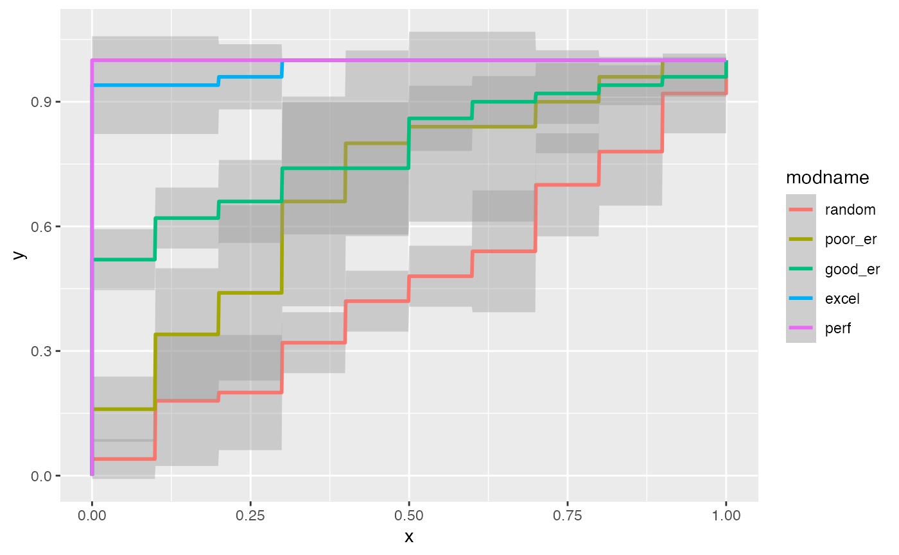## Generate an mspoints object that contains basic evaluation measures mspoints <- evalmod(mdat, mode = "basic") ## Fortify mspoints msdf <- fortify(mspoints) ## Plot normalized ranks vs. precision df_prec <- subset(msdf, curvetype == "precision") p_prec <- ggplot(df_prec, aes(x = x, y = y, color = modname)) p_prec <- p_prec + geom_point() p_prec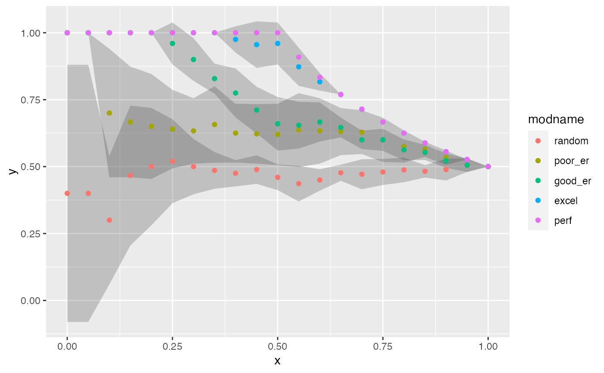################################################## ### Single model & multiple test datasets ### ## Create sample datasets with 10 positives and 10 negatives samps <- create_sim_samples(5, 10, 10, "good_er") mdat <- mmdata(samps[["scores"]], samps[["labels"]], modnames = samps[["modnames"]], dsids = samps[["dsids"]]) ## Generate an smcurve object that contains ROC and Precision-Recall curves smcurves <- evalmod(mdat, raw_curves = TRUE) ## Let ggplot internally call fortify p_rocprc <- ggplot(smcurves, aes(x = x, y = y, ymin = ymin, ymax = ymax)) p_rocprc <- p_rocprc + geom_smooth(stat = "identity") p_rocprc <- p_rocprc + facet_wrap(~curvetype) p_rocprc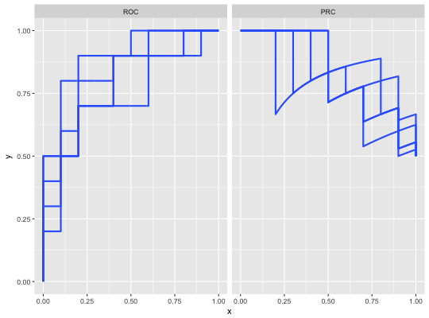## Explicitly fortify smcurves smdf <- fortify(smcurves) ## Plot average ROC curve df_roc <- subset(smdf, curvetype == "ROC") p_roc <- ggplot(df_roc, aes(x = x, y = y, ymin = ymin, ymax = ymax)) p_roc <- p_roc + geom_smooth(stat = "identity") p_roc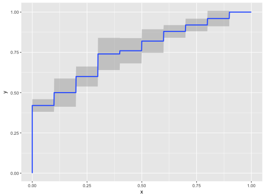## Plot average Precision-Recall curve df_prc <- subset(smdf, curvetype == "PRC") p_prc <- ggplot(df_prc, aes(x = x, y = y, ymin = ymin, ymax = ymax)) p_prc <- p_prc + geom_smooth(stat = "identity") p_prc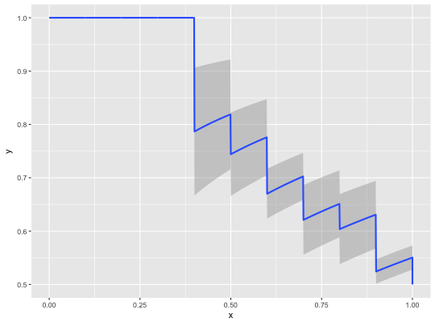## Generate an smpoints object that contains basic evaluation measures smpoints <- evalmod(mdat, mode = "basic") ## Fortify smpoints smdf <- fortify(smpoints) ## Plot normalized ranks vs. precision df_prec <- subset(smdf, curvetype == "precision") p_prec <- ggplot(df_prec, aes(x = x, y = y, ymin = ymin, ymax = ymax)) p_prec <- p_prec + geom_ribbon(aes(min = ymin, ymax = ymax), stat = "identity", alpha = 0.25, fill = "grey25") p_prec <- p_prec + geom_point(aes(x = x, y = y)) p_prec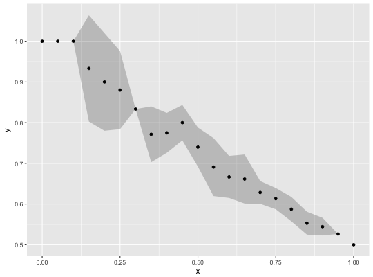################################################## ### Multiple models & multiple test datasets ### ## Create sample datasets with 10 positives and 10 negatives samps <- create_sim_samples(5, 10, 10, "all") mdat <- mmdata(samps[["scores"]], samps[["labels"]], modnames = samps[["modnames"]], dsids = samps[["dsids"]]) ## Generate an mscurve object that contains ROC and Precision-Recall curves mmcurves <- evalmod(mdat, raw_curves = TRUE) ## Let ggplot internally call fortify p_rocprc <- ggplot(mmcurves, aes(x = x, y = y, ymin = ymin, ymax = ymax)) p_rocprc <- p_rocprc + geom_smooth(aes(color = modname), stat = "identity") p_rocprc <- p_rocprc + facet_wrap(~curvetype) p_rocprc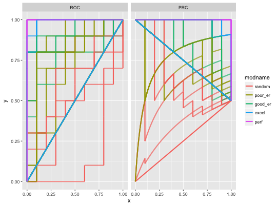## Explicitly fortify mmcurves mmdf <- fortify(mmcurves) ## Plot average ROC curve df_roc <- subset(mmdf, curvetype == "ROC") p_roc <- ggplot(df_roc, aes(x = x, y = y, ymin = ymin, ymax = ymax)) p_roc <- p_roc + geom_smooth(aes(color = modname), stat = "identity") p_roc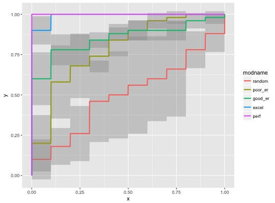## Plot average Precision-Recall curve df_prc <- subset(mmdf, curvetype == "PRC") p_prc <- ggplot(df_prc, aes(x = x, y = y, ymin = ymin, ymax = ymax)) p_prc <- p_prc + geom_smooth(aes(color = modname), stat = "identity") p_prc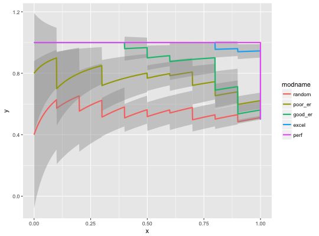## Generate an mmpoints object that contains basic evaluation measures mmpoints <- evalmod(mdat, mode = "basic") ## Fortify mmpoints mmdf <- fortify(mmpoints) ## Plot normalized ranks vs. precision df_prec <- subset(mmdf, curvetype == "precision") p_prec <- ggplot(df_prec, aes(x = x, y = y, ymin = ymin, ymax = ymax)) p_prec <- p_prec + geom_ribbon(aes(min = ymin, ymax = ymax, group = modname), stat = "identity", alpha = 0.25, fill = "grey25") p_prec <- p_prec + geom_point(aes(x = x, y = y, color = modname)) p_prec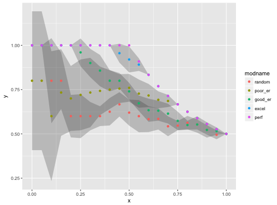